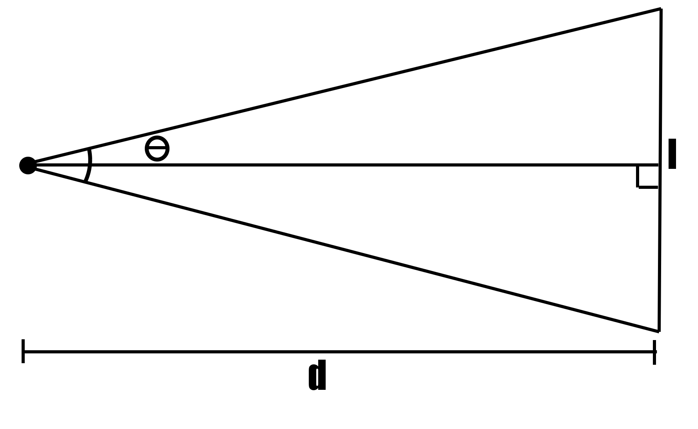

Automatic Targeting - - with a webcam and OpenCV
Posted on June 28, 2016
"Hey Sean, we're going to use vision tracking on the robot this year. Do you want to be in charge of that?"
"Oh, sure, I guess."
And that's how I got started on this. I'd been on the robotics team since 9th grade, but only so many people can work on one piece of code, so I'd never made any major contributions before. Now, I had my own little project.
So I was told that we were buying a Jetson TK1 development board, a few of Microsoft Lifecam HD 3000s, and a couple of green LED rings. The camera would take video, do some calculations, and send tracking data to the roboRIO (the main processor on the robot, for the unfamiliar). The specifics were to be determined.
Our Robot
First, an explanation of the FIRST Robotics competition. Every year, around the beginning of January, there is a 'kickoff', during which FIRST livestreams an explanation of the year's game and makes the rulebook available. The game always consists of two alliances, with three teams (each having one robot) on each alliance. Alliances are randomly determined at each competition, so when a team is constructing a robot, they cannot assume they will be able to rely on the other teams in their alliance. The game usually has several ways to score points. In 2015 the primary mechanic was stacking plastic crates. This past year, it was shooting balls into a goal.
Our robot, "Man O' War"
The robot uses tank treads that bend upward in the front so it can easily drive over obstacles (another way to earn points). The shooter uses wheels to suck up balls and shoot them back out the top. It was a fairly consistent way to shoot, but just eyeballing the aim could be tough. That's why we mounted a USB webcam on the top of the shooter. It passed video to the Jetson TK1, a Ubuntu Linux based development board, which tracked the goal and told the roboRIO where to aim.
The Software
The first thing to do was figure out how to track the goal. Really, all the robot needed to know was 1) how far away the goal was, so it knew how much power to throw the ball with, and 2) the angle it needed to rotate to be lined up with the goal. The goal was an arch shaped hole, 2 feet by 1 foot 4 inches, 7 feet 1 inch off the ground. The bottom and sides were covered with retroreflective tape - and that's how the camera could track the goal.
A picture of the goal from the game manual, with the retroreflective tape pointed out
A substance is said to be retroreflective if it reflects light only directly back toward the source of the light. Retroreflective tape doesn't look special, just a sort of silvery grey, but if you hold a light near your face and look at the tape, it glows like the sun. So the idea was: put a ring of green LED lights around the aperture of the camera, and the camera will see the outline of the goal glowing a consistent bright green, which it could easily seperate from the surrounding image. This is a tried and tested concept, used by teams nearly every year.
OpenCV was the obvious tool for this job. OpenCV is an open source camera vision library that could be implemented in several languages (we used C++). So I did a little playing around, and it didn't take long for me to figure out how to threshold out any color that wasn't that distinctive green glow. A little more work - it could identify which of the three goals it saw was the largest, and therefore one it should be shooting into. So now that it could track the goal, I had to figure out how to calculate the distance and angle.
The Math
I briefly considered using two cameras, and trying to do some kind of stereoscopic transformation to figure out the deviance between the angles of view and yada yada yada it turned out to be too complicated. I ended up using a single camera and a lot of geometry.
The math I did centers around the idea that the angle of view of the camera was constant, as was the resolution of the camera. This means that every degree of the field of view must be a constant number of pixels. Therefore, I could use OpenCV to detect the width of the image of the goal in pixels, and turn that into how many degrees of the field of view the goal takes up, a much more useful quantity.

How many degrees of the field of view is each pixel? 2*arctan(l/2d) divided by the length of l in pixels, that's how many!
I was able to calculate the angle of view and the degrees per pixel value by taking pictures of a meter stick and using the above. For the Microsoft Lifecam HD 3000, the horizontal field of view turned out to be ~50.6496 degrees, or 0.07914 degrees per pixel. The vertical field of view was 39.3072 degrees, or 0.08189 degrees per pixel. The angle the robot needed to rotate to be pointing directly at the goal could then be easily be found by counting the pixels from the center of the image to the center of the goal and multiplying by the horizonatal degrees-per-pixel value.
Here's how I calculated the distance:

Here h and l are known because the height and size of the goal was always the same in every math.
Phi, the angle between the camera horizontal and the top of the goal, could be easily found by counting the pixels between the center of the image and the top of the goal and multiplying by the vertical degrees-per-pixel value found above. Knowing the angle the camera was mounted at (another measurement I had to calculate before we actually mounted it, to make sure it always had the goal in frame) theta, the distance between the robot and the goal could be found using l+h/tan(theta-phi).
That finds the distance from the robot to the nearest edge of the goal, but if the robot wasn't perfectly square with the goal, wouldn't the distance calculation be a little under? Well, I accounted for that as well:
After d is found, d' could be calculated
The extra distance d' is equal to the square root of l/2 squared minus d*tan(theta/2) (where this time l is the length of the goal, not the height). Pretty simple. hopefully. The most difficult part was accounting for the fact that the camera was not going to be mounted right in the center of the shooter - it would be off to the side a little bit. This made the distance just slightly different. In order for the shooter to be as accurate as possible, I wanted to make sure the distance calculation was as accurate as possible, so I figured out a couple of long formulas that accounted for this offset.
So after all that math, did it work? Yeah it did! The calculated distance was almost always within just a few inches of the actual distance. The math, however, was not nearly the most difficult part of this project.
Major Problems
We ran into several roadblocks trying to make this all work. The first was with the tracking of the reflective tape. Once the threshold color was properly calibrated, the tracking was very accurate. But something as simple as changing the lighting in the room could throw everything off, if it caused the camera so see colors it hadn't previously and wasn't thresholding out. I did, after mulling over this problem for several days, come up with a solution I thought was pretty clever that involved polarizing light filters, but that didn't pan out due to constraints on time and manpower. Instead, I adjusted the brightness, contrast, and exposure on the camera until the green of the tape was the most distinct color it could see, and we simply relied on manually calibrating the thresholding algorithm whenever we started running the robot.
Then came frustration. Lots and lots of frustration. See, our original thought was to have the Jetson communicate with the roboRIO over a standard serial connection. After spending HOURS figuring out how to set that up (we were having a problem with the cable we used to connect them) it finally worked. Until it didn't. We were concerned about the serial connection not being fast enough to keep up with the changing camera data, but that ended up not being a problem when the data started to get all garbled in the middle of running the robot. After speding several more hours unsuccessfully attempting to find what the problem was, we decided to stop using serial and instead connect the Jetson to the router on the robot that controlled communications between the RIO and the driver's station. The standard FIRST C++ library has a class called Network Tables, which allowed the Jetson to write values to the network and the RIO to read them. Again, that was working pretty well... until we broke the Jetson. I'm not entirely sure what happened, I guess someone just mishandled it one day. So we had to buy another one. And it was then that I realized... I hadn't backed up any of the network tables code. Pushing the code on the Jetson to GitHub was really hard because I had to disconnect it from the robot and connect it via ethernet to the internet, which I didn't really have time to do when we were coming to the end of the season. We had spent hours setting up the Jetson, compiling all the necessary libraries and so forth... and all that was gone. Luckily I had an older version of the code from when I was still testing on my computer, so there wasn't that much rewriting to do... but man I felt stupid. But hey, we did what had to be done and got back on track, this time with a 3D printed case to protect the Jetson.
Left: the Jetson TK1. Right: Our somewhat ghetto case.
That's pretty much it. The robot went to competition (although I did not go with it, for various reasons) and did reasonably well. We took 41st of 59 at the Greater Kansas City regional, and 23rd of 53 at the Iowa regional. Unfortunately, there was another problem. We didn't account for the fact that during competition, a lot of traffic was going over the network the robots were connected to, because there were 5 other robots besides our own all being controlled at the same time. As a result, there wasn't really enough bandwidth for the automatic targeting system to be reliable. But hey, it worked really well on its own, and I learned a lot building it, so I feel good about it.
This website was produced by Sean Patrick Doyle and published in 2016. Anything here may be used freely, if you want, but please give me credit.